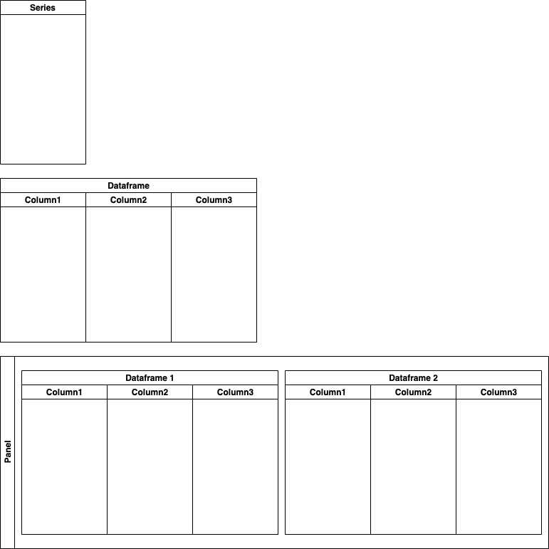

.png)
Throughout this part of the tutorial series we’ll be using data from fictitious e-commerce business LargeRainforest.com to demonstrate how to use Python to import, prepare and transform data by performing tasks that data scientists and data analysts do on a daily basis. The data includes information on orders, products, returns, promotions, customers and marketing. As we move through the series and the fundamentals of working with data in Python, we’ll build a dataset that processes and blends these different datasources into one dataset that we can use for analysis and modelling of the business. If you want to code along you download the raw data here.
Pandas is a Python library developed for manipulating and analysing data. Using Pandas we can select, clean, modify, rearrange and aggregate our data, often with only a few simple lines of code. Pandas was developed on top of another numerical computing library called Numpy and the two are often complimentary. Pandas however, adds to the functionality in Numpy and is often easier to use and more flexible which is why it has become an essential tool for data scientists and analysts who work with Python.
Pandas makes use of three different data structures: Series (1-dimensional), DataFrames (2-dimensional) and Panels (3-dimensional). Each of these structures contains data and can have different Pandas operations performed on them as we will see shortly. We will only be working with Series and DataFrames throughout this tutorial series.
If you are familiar with tables from either spreadsheets or databases then Pandas DataFrames will immediately seem comfortable to you which is the point really. DataFrames appear like regular tables, they have rows representing records or entries of data and columns for each attribute of the dataset.
Series are essentially simple DataFrames. While DataFrames can have as many columns as required (or as your computer memory will allow), Series or comprised of just one column. While you can perform a lot of the same operations on a Series that you can on a DataFrame there are some operations that are unique to Series and vice versa.
Let's start working with data using Pandas.